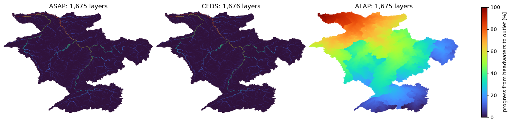
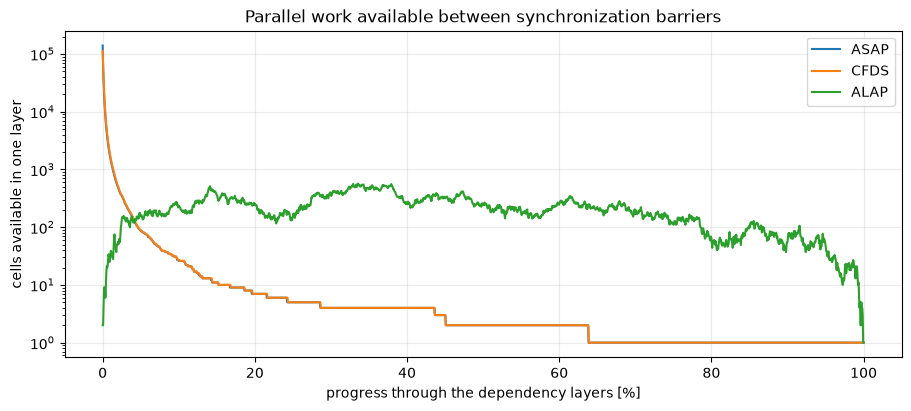
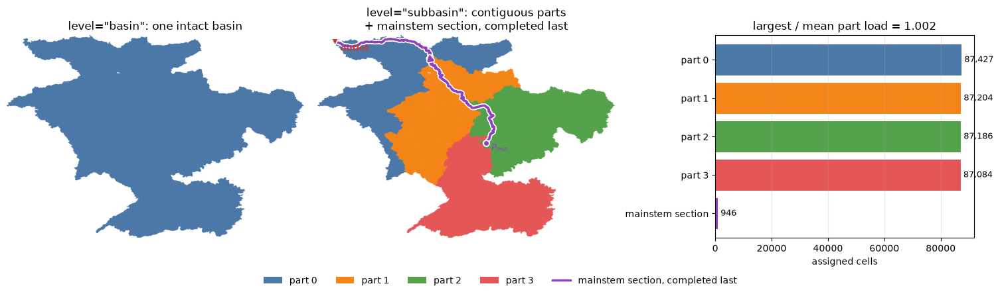

Tip
Parallel accumulation: layers and partitions#
Upstream accumulation is the only computation in pyflwdir that runs in parallel: accuflux with direction="up" and the raster’s upstream_area. No other method does.
run in |
arguments |
available on |
needs |
|---|---|---|---|
threads |
|
|
nothing extra |
processes, with threads inside |
|
|
METIS: |
Layers and partitions only divide the cells. layer_cells returns the layers and partition returns a PartitionPlan; neither makes anything run in parallel. The threaded accumulation builds the layers it needs itself. The process accumulation runs the plan it is given as partition_plan, one process a part, after checking that the plan fits the flow directions.
A partition has a limit. A tributary is never cut, so the heaviest part is at least as heavy as the largest tributary, however many parts are asked.
Which to use#
Start with threads. parallel=True needs nothing extra and uses the current Numba thread count (numba.set_num_threads).
Processes, with threads inside, are meant for large rasters. They also cost the time to make the plan, once, since one plan serves any number of calls, and, on every call, to check the plan, start the processes and share the raster. Make a new plan after the flow directions change, for example by add_pits; a plan that no longer fits is refused. How far they go is limited by the largest tributary. The Rhine example used below is too small to establish a general speedup for either.
In a script, call them below a __main__ guard, because the processes start with spawn by default and import the script. This block is not run when the notebook is built:
import rasterio
import pyflwdir
if __name__ == "__main__":
with rasterio.open("rhine_d8.tif") as src:
flw = pyflwdir.from_array(
src.read(1),
ftype="d8",
transform=src.transform,
latlon=src.crs.is_geographic,
)
plan = flw.partition(n_processes=4, level="subbasin") # one part per process
area = flw.upstream_area(
"km2",
parallel=True,
partition_plan=plan,
threads_per_process=2,
)
How the cells are divided#
Each way of running answers one question about the hardware, following FlowTopo (Jiang et al., 2026):
hardware question |
reusable structure |
execution scale |
|---|---|---|
Is the next cell still in cache? |
ordering |
one core |
Which cells are ready together? |
layering |
multiple cores |
Which cells go where? |
partition |
multiple processes |
Cell orderings covers the first question; this notebook takes the other two, on the Rhine. Here we assume that flow directions are known; see the earlier examples for background.
[1]:
# import pyflwdir, some dependencies and convenience methods
import matplotlib.pyplot as plt
import numpy as np
import rasterio
import pyflwdir
# read and parse data
with rasterio.open("rhine_d8.tif", "r") as src:
flwdir = src.read(1)
crs = src.crs
flw = pyflwdir.from_array(
flwdir,
ftype="d8",
transform=src.transform,
latlon=crs.is_geographic,
cache=True,
)
# the next cell downstream of every cell
idxs_ds = flw.idxs_ds
print(f"{flw.ncells:,} cells draining to {flw.idxs_pit.size} pit(s)")
349,847 cells draining to 1 pit(s)
Many threads: which cells run together?#
An ordering visits one cell at a time. A layering answers a different question: which cells are ready at the same time? Layers count from the headwaters (layer 0) toward the outlet, the opposite direction from the stored serial sequences, because a cell can run only after all of its upstream dependencies have finished.
The three names describe when a ready cell is scheduled:
ASAP (as soon as possible) uses the earliest valid layer;
ALAP (as late as possible) delays shorter tributaries to later valid layers;
CFDS (conflict-free downstream) starts from ASAP and separates cells that would write to the same downstream receiver.
This is already a parallel form of topological sorting. The layering decides when a cell runs; the manner decides who writes the result. A pull kernel (the function that does the accumulation) writes only its current cell after reading completed upstream values, so all three layerings are safe. A push kernel adds into the downstream receiver, so it requires CFDS to prevent two threads from writing to the same cell. Performance then depends on layer width, on the wait at the end of
each layer, where threads stop until the layer is complete (a barrier), and on memory bandwidth, not on the serial topo sequence.
[2]:
print(f"{'method':>8} {'layers':>8} {'largest':>9} {'shared receivers':>16}")
for method in ["asap", "cfds", "alap"]:
layers, n_layers = flw.layer_cells(method)
layers = layers.ravel()
sizes = np.bincount(layers[layers >= 0], minlength=n_layers)
conflicts = 0
for layer in range(n_layers):
cells = np.flatnonzero(layers == layer)
receivers = idxs_ds[cells[idxs_ds[cells] != cells]]
conflicts += receivers.size - np.unique(receivers).size
print(f"{method:>8} {n_layers:>8,} {sizes.max():>9,} {conflicts:>16,}")
serial = flw.upstream_area("km2")
threaded = flw.upstream_area("km2", parallel=True)
valid = serial != -9999
print("same to floating-point rounding:", np.allclose(threaded[valid], serial[valid]))
print("largest difference in km2:", np.abs(threaded[valid] - serial[valid]).max())
method layers largest shared receivers
asap 1,675 140,092 35,022
cfds 1,676 112,812 0
alap 1,675 568 140,091
same to floating-point rounding: True
largest difference in km2: 5.529727786779404e-10
The table quantifies the trade-off. CFDS reduces shared downstream receivers to zero, here at the cost of one more layer and a narrower widest layer. ALAP makes layers much narrower but leaves many shared receivers, so, like ASAP, it can only run pull; it trades available parallel width for a flatter schedule. The last two lines verify that the threaded push result agrees with the serial result to floating-point rounding.
The maps below show the same distinction. A colour is the headwater-to-outlet layer in which a cell runs; cells with the same colour can run together.
[3]:
layer_methods = ["asap", "cfds", "alap"]
layer_arrays = {}
fig, axes = plt.subplots(
1, 3, figsize=(14, 3.8), sharex=True, sharey=True, constrained_layout=True
)
for ax, method in zip(axes, layer_methods):
layers, n_layers = flw.layer_cells(method)
layer_arrays[method] = layers.ravel()
relative = layers / max(n_layers - 1, 1) * 100
im = ax.imshow(np.ma.masked_less(relative, 0), cmap="turbo", vmin=0, vmax=100)
ax.set_title(f"{method.upper()}: {n_layers:,} layers")
ax.axis("off")
fig.colorbar(im, ax=axes, shrink=0.82, label="progress from headwaters to outlet [%]")
plt.show()

A map alone does not show how much parallel work each layer offers. Each point below is one layer. Wide layers offer useful parallel work; narrow layers still pay for the barrier at their end. In this Rhine example ASAP exposes the widest layers, CFDS gives up some of that width for safe push, and ALAP spreads the work over many narrow layers. Layering therefore makes threading correct; it does not by itself make it faster.
[4]:
fig, ax = plt.subplots(figsize=(9, 4), constrained_layout=True)
for method in layer_methods:
layers = layer_arrays[method]
n_layers = int(layers.max()) + 1
sizes = np.bincount(layers[layers >= 0], minlength=n_layers)
progress = np.linspace(0, 100, n_layers)
ax.plot(progress, sizes, label=method.upper(), linewidth=1.5)
ax.set(
xlabel="progress through the dependency layers [%]",
ylabel="cells available in one layer",
title="Parallel work available between synchronization barriers",
)
ax.set_yscale("log")
ax.grid(alpha=0.25)
ax.legend()
plt.show()

One hydrological method, three execution paths#
The same accumulation can run in three ways, on an ordering or on a layering:
serial: read one outlet-to-headwater sequence, forwards or backwards as needed;
parallel pull: each cell gathers finished upstream values; ASAP, ALAP and CFDS are all safe;
parallel push: each cell adds to its downstream receiver; CFDS is required.
A depth-first basin is simply an interval cut from the serial sequence. It uses the same serial kernel on fewer cells.
CFDS push, the default, avoids the upstream index; pull with ASAP, ALAP or CFDS reads it. Which is faster depends on layer width, barrier cost and memory bandwidth.
Upstream accumulation is the only method written for the parallel paths so far; every other method takes the serial one.
Several processes: which cells go where?#
The layers above divide work between threads that share memory. Processes need a coarser division first: flw.partition divides the raster into n_processes parts, four by default, and each part runs in its own process. There are two levels:
``level=”basin”`` (FlowTopo Method 1) treats every intact basin as one weighted graph node. Raster neighbours create graph edges, weighted by the length of the shared boundary. A basin larger than an equal share is a part of its own; METIS, a graph partitioning library, divides the other basins into spatially coherent parts, which a refinement then balances.
``level=”subbasin”`` (FlowTopo Method 2) handles basins too large to balance whole. It traces the mainstem of such a basin, going up from the outlet through the tributary with the most cells at each confluence. It opens the basin into the tributary subtrees that drain into the mainstem – and another basin only where that one keeps the parts from balancing – and divides those subtrees and the other basins into
n_processesparts at once.
\(P_{min}\) is the most upstream mainstem cell where a tributary of another part enters. From \(P_{min}\) down to the outlet, \(P_{min}\) included, an opened mainstem belongs to no process: it is a mainstem section, labelled n_processes.
The accumulation therefore runs in two stages:
Each process accumulates its part, one CFDS layer at a time in threads, and stops at the boundary of the part.
After all processes finish, the parent process completes each mainstem section, from \(P_{min}\) down to the outlet. It uses the completed upstream mainstem value and the totals of the tributaries that enter.
The FlowTopo C code behind the first published partitions assigned the tributaries one at a time, by capacity and geographic affinity; pyflwdir, and the FlowTopo C code since, divide them as one graph, as described below.
How the parts are chosen at subbasin level#
Assigning tributaries one at a time can produce balanced but scattered parts. pyflwdir instead partitions one graph of the other basins and the opened basin’s tributary subtrees (a basin of a single cell is left out). Tributaries are neighbours when they share a raster boundary or enter consecutive positions on the mainstem, so the two banks touch across it. Subtrees below min_subtree_size are grouped with the nearest eligible tributary, so they inherit a surrounding territory instead of
reappearing as isolated colour patches. METIS partitions the weighted groups, from several seeds, asking for connected parts (contig=1); any piece it still leaves apart joins a neighbouring part. A refinement then moves single tributaries or basins on the ground from heavier to lighter neighbouring parts, never cutting a part in two, until the largest load divided by the mean is at most imbalance_target (1.005 by default), a refinement sweep makes no move, or the move limit is reached:
the target is not guaranteed.
As in the FlowTopo C code, the part holding the most upstream tributary keeps the mainstem above \(P_{min}\).
min_subtree_size is 100,000 cells by default, as in the continental FlowTopo C workflow. Regardless of min_subtree_size, at least 8 * n_processes groups are kept, or every tributary if there are fewer, so the default also suits this smaller raster. It is set when the plan is made, as an argument of partition. The bar chart reports the largest part load divided by the mean, and the code prints whether it is within 1%.
[5]:
from matplotlib import patheffects
from matplotlib.colors import ListedColormap
from matplotlib.lines import Line2D
from matplotlib.patches import Patch
n_processes = 4 # the default
basin_parts = flw.partition(n_processes=n_processes, level="basin").parts
subbasin_plan = flw.partition(n_processes=n_processes, level="subbasin")
subbasin_parts = subbasin_plan.parts
subbasin_loads = subbasin_plan.loads
palette = [
"#4C78A8",
"#F58518",
"#54A24B",
"#E45756",
"#72B7B2",
"#EECA3B",
"#B279A2",
"#FF9DA6",
"#9D755D",
"#BAB0AC",
]
part_colors = [palette[part % len(palette)] for part in range(n_processes)]
mainstem_color = "#8F3FBF"
partition_cmap = ListedColormap(part_colors + [mainstem_color])
fig, axes = plt.subplots(
1,
3,
figsize=(15, 4.3),
gridspec_kw={"width_ratios": [1, 1, 0.85]},
constrained_layout=True,
)
axes[0].imshow(
np.ma.masked_less(basin_parts, 0), cmap=partition_cmap, vmin=0, vmax=n_processes
)
axes[0].set_title('level="basin": one intact basin')
axes[0].axis("off")
axes[1].imshow(
np.ma.masked_less(subbasin_parts, 0), cmap=partition_cmap, vmin=0, vmax=n_processes
)
mainstem_rows, mainstem_cols = np.unravel_index(subbasin_plan.mainstem, flw.shape)
mainstem_line = axes[1].plot(
mainstem_cols,
mainstem_rows,
color=mainstem_color,
linewidth=2.4,
solid_capstyle="round",
zorder=4,
)[0]
mainstem_line.set_path_effects(
[
patheffects.Stroke(linewidth=4.8, foreground="white"),
patheffects.Normal(),
]
)
axes[1].scatter(
mainstem_cols[0],
mainstem_rows[0],
s=42,
color=mainstem_color,
edgecolor="white",
linewidth=1.4,
zorder=5,
)
axes[1].annotate(
r"$P_{min}$",
(mainstem_cols[0], mainstem_rows[0]),
xytext=(6, -8),
textcoords="offset points",
color=mainstem_color,
fontsize=9,
fontweight="bold",
zorder=6,
)
outlet_color = "#C43D30"
axes[1].scatter(
mainstem_cols[-1],
mainstem_rows[-1],
marker="v",
s=58,
color=outlet_color,
edgecolor="white",
linewidth=1.2,
zorder=7,
)
axes[1].annotate(
"outlet",
(mainstem_cols[-1], mainstem_rows[-1]),
xytext=(6, -10),
textcoords="offset points",
color=outlet_color,
fontsize=9,
fontweight="bold",
zorder=7,
)
arrow_start = int(0.55 * (mainstem_cols.size - 1))
arrow_end = min(mainstem_cols.size - 1, arrow_start + max(8, mainstem_cols.size // 15))
direction = axes[1].annotate(
"",
xy=(mainstem_cols[arrow_end], mainstem_rows[arrow_end]),
xytext=(mainstem_cols[arrow_start], mainstem_rows[arrow_start]),
arrowprops={
"arrowstyle": "-|>",
"color": mainstem_color,
"linewidth": 2.2,
"mutation_scale": 13,
},
zorder=6,
)
direction.arrow_patch.set_path_effects(
[
patheffects.Stroke(linewidth=4.4, foreground="white"),
patheffects.Normal(),
]
)
axes[1].set_title(
'level="subbasin": contiguous parts\n+ mainstem section, completed last'
)
axes[1].axis("off")
mainstem_cells = subbasin_plan.mainstem.size
imbalance = subbasin_loads.max() / subbasin_loads.mean()
print(f"largest part / mean part <= 1.01: {imbalance <= 1.01} ({imbalance:.3f})")
for stem in subbasin_plan.stems:
print(
f"the mainstem section starts after cell {stem.predecessor} "
f"and contains {stem.mainstem.size:,} cells"
)
labels = [f"part {part}" for part in range(n_processes)] + ["mainstem section"]
values = list(subbasin_loads.astype(int)) + [mainstem_cells]
axes[2].barh(labels, values, color=part_colors + [mainstem_color])
axes[2].invert_yaxis()
axes[2].set_xlabel("assigned cells")
axes[2].set_title(f"largest / mean part load = {imbalance:.3f}")
axes[2].grid(axis="x", alpha=0.25)
for row, value in enumerate(values):
axes[2].text(value, row, f" {value:,}", va="center", fontsize=9)
legend = [
Patch(facecolor=color, label=f"part {part}")
for part, color in enumerate(part_colors)
]
legend.append(
Line2D(
[0],
[0],
color=mainstem_color,
linewidth=2.4,
path_effects=[
patheffects.Stroke(linewidth=4.8, foreground="white"),
patheffects.Normal(),
],
label="mainstem section, completed last",
)
)
fig.legend(
handles=legend, loc="outside lower center", ncol=n_processes + 1, frameon=False
)
plt.show()
largest part / mean part <= 1.01: True (1.002)
the mainstem section starts after cell 362474 and contains 946 cells

References#
The three layerings, the hardware view and the two partition methods come from FlowTopo:
Jiang, L., Wu, H., Chen, W., Huang, Z., Yamazaki, D., Yang, T. and Li, L. (2026). FlowTopo (v1.0.0). Zenodo. https://doi.org/10.5281/zenodo.22227621